<title>Slime Cut Count</title>
<meta name="claude:viewport-fit-sides" content="cover">
<link rel="stylesheet" href="https://fonts.googleapis.com/css2?family=Chakra+Petch:wght@600;700&family=IBM+Plex+Sans:wght@400;600&family=IBM+Plex+Mono:wght@400;500&display=swap">
<style>
/* Same system as the Mind, reader, route, element and Tinder pages. Accents: the cut map's own red and orange. */
:root{
  --bg:#eef0ee; --panel:#e0e4e1; --fg:#161a19; --muted:#56605c; --line:#c5cbc7;
  --red:#c42a2a; --orange:#b86a00; --crystal:#137f95;
  --display:"Chakra Petch","Segoe UI",system-ui,sans-serif;
  --body:"IBM Plex Sans","Segoe UI",system-ui,sans-serif;
  --mono:"IBM Plex Mono",ui-monospace,Consolas,monospace;
}
@media (prefers-color-scheme: dark){:root:not([data-theme="light"]){
  --bg:#101413; --panel:#1a201e; --fg:#e8ece9; --muted:#9aa5a0; --line:#2b3330;
  --red:#ff6b5c; --orange:#ffb03a; --crystal:#5fd0e3; color-scheme:dark}}
:root[data-theme="dark"]{
  --bg:#101413; --panel:#1a201e; --fg:#e8ece9; --muted:#9aa5a0; --line:#2b3330;
  --red:#ff6b5c; --orange:#ffb03a; --crystal:#5fd0e3; color-scheme:dark}
body{background:var(--bg);color:var(--fg);font:16.5px/1.55 var(--body);
  padding-left:max(16px,env(safe-area-inset-left,0px));padding-right:max(16px,env(safe-area-inset-right,0px));padding-block:28px 64px}
main{max-width:1180px;margin:0 auto;display:flex;flex-direction:column;gap:38px}
h1,h2,h3{font-family:var(--display);text-wrap:balance;line-height:1.12;margin:0;letter-spacing:.01em}
h1{font-size:2.5rem;font-weight:700} h2{font-size:1.5rem;font-weight:700} h3{font-size:1.15rem;font-weight:700}
p{margin:0;max-width:70ch}
section{display:flex;flex-direction:column;gap:14px}
.eyebrow{font:12px/1 var(--mono);letter-spacing:.1em;text-transform:uppercase;color:var(--muted)}
.lede{color:var(--muted);font-size:1.04rem;max-width:72ch}
.verdict{border-left:4px solid var(--red);background:var(--panel);padding:14px 18px;border-radius:0 6px 6px 0;max-width:80ch}
.verdict strong{font-family:var(--display);font-size:1.2rem}
ul{margin:0;padding-left:1.2em;display:flex;flex-direction:column;gap:8px;max-width:76ch}
code{font:.86em var(--mono);background:var(--panel);padding:1px 4px;border-radius:3px}
.legend{display:flex;flex-wrap:wrap;gap:8px 18px;font-size:.92rem}
.legend span{display:inline-flex;align-items:center;gap:6px}
.legend i{width:14px;height:14px;border-radius:3px;display:inline-block;border:1px solid var(--line)}
.pair{display:grid;grid-template-columns:repeat(2,1fr);gap:14px}
@media (max-width:760px){.pair{grid-template-columns:1fr}}
figure{margin:0;display:flex;flex-direction:column;gap:6px;min-width:0}
figcaption{font-size:.88rem;color:var(--muted)}
img.still{width:100%;max-width:100%;border-radius:6px;border:1px solid var(--line);display:block;background:#16181c}
.planet{display:flex;flex-direction:column;gap:10px;padding-top:18px;border-top:1px solid var(--line)}
.planet header{display:flex;flex-wrap:wrap;gap:6px 14px;align-items:baseline}
.tag{font:500 12px/1.3 var(--mono);letter-spacing:.06em;text-transform:uppercase;color:var(--muted)}
.nums{display:flex;flex-wrap:wrap;gap:8px 26px;margin:0}
.nums div{display:flex;flex-direction:column}
.nums dt{font:12px/1.3 var(--mono);letter-spacing:.06em;text-transform:uppercase;color:var(--muted)}
.nums dd{margin:0;font:600 1.15rem/1.3 var(--display);font-variant-numeric:tabular-nums}
.red{color:var(--red)} .orange{color:var(--orange)} .dim{color:var(--muted)}
.scroll{overflow-x:auto;max-width:100%}
table{border-collapse:collapse;font-variant-numeric:tabular-nums;font-size:.93rem;min-width:640px}
th,td{text-align:right;padding:5px 10px;border-bottom:1px solid var(--line);white-space:nowrap}
th:first-child,td:first-child{text-align:left}
th{font:500 12px/1.3 var(--mono);letter-spacing:.05em;text-transform:uppercase;color:var(--muted)}
</style>
<main>
<header style="display:flex;flex-direction:column;gap:12px">
  <span class=eyebrow>Gun cards, step D, the cut family · 2026-11-17</span>
  <h1>Is there slime worth cutting off?</h1>
  <p class=lede>Before a Cut card is built, the plan asked how often a run planet has a part that one thin cut would leave without food.
  The owner's worry (11-16): the slime sits on crystals all over, so there is rarely a big piece to cut.</p>
  <div class=verdict><strong>No Cut card.</strong> The largest part one cut could starve is under 2% of the slime in 21 of 22 counts
  (median share behind necks 4 cells wide: 1.1%). The one exception is the Swarmer's first minute: arms round the rock, 19% of the slime, the biggest part 9%.
  Walls and positioning already cut there, and withering and panic make that cut show.</div>
</header>

<section>
  <h2>How to read a cut map</h2>
  <p>One square per dish cell. A part is cuttable when the only slime joining it to a crystal with charge is a neck 2 or 4 dish cells wide.
  A part held by two necks counts too, so this is the most one cut could give.</p>
  <div class=legend>
    <span><i style="background:rgb(220,40,40)"></i>cut off by a neck of 2</span>
    <span><i style="background:rgb(245,150,30)"></i>cut off only by a neck of 4</span>
    <span><i style="background:rgb(150,135,100)"></i>slime on food</span>
    <span><i style="background:rgb(120,80,160)"></i>slime already without food</span>
    <span><i style="background:rgb(60,140,230)"></i>a crystal with charge (food)</span>
  </div>
</section>

<section>
  <h2>The first count was wrong on the Sleeper</h2>
  <p>The first census said 30-56% of the Sleeper planet's slime hung on necks 4 cells wide. Its map showed why: a wide sheet is speckled with empty cells,
  and the count read the speckle as necks. Empty cells on open ground with 5 of their 8 neighbours slime now count as slime for the shape (rock is never filled).
  Same moment, same slime: 29.6% before, 0.9% after.</p>
  <div class=pair>
    <figure>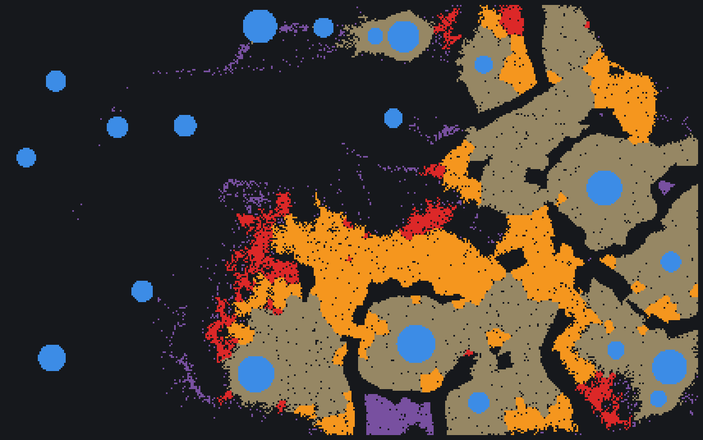<figcaption>Pinholes left open: 29.6% behind necks 4, 10 parts of 500+</figcaption></figure>
    <figure>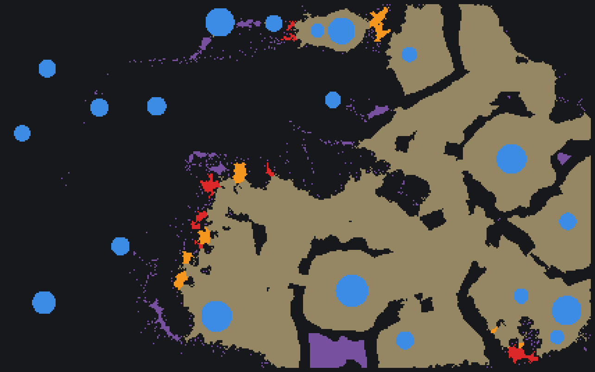<figcaption>Pinholes filled: 0.9% behind necks 4, 0 parts of 500+</figcaption></figure>
  </div>
</section>

<section>
  <h2>Each planet at its worst count</h2>
  <p>Run seed 1, nobody shooting (the squad-taking hand in the first census matched it wherever both still played), counted at 1, 2 and 3 minutes.</p>
  
  <article class=planet>
    <header><h3>Planet 1: Drifter</h3><span class=tag>120 s, its worst count, ended at 136 s, squad wiped</span></header>
    <div class=pair>
      <figure>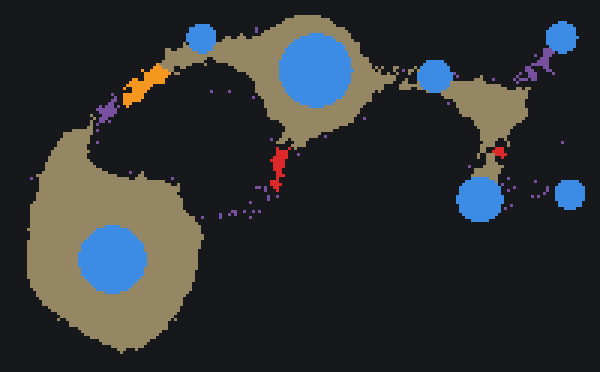<figcaption>The cut map</figcaption></figure>
      <figure>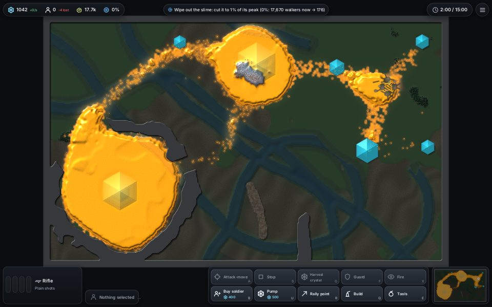<figcaption>The game at the same moment</figcaption></figure>
    </div>
    <dl class=nums>
      <div><dt>Slime</dt><dd>17,720 walkers</dd></div>
      <div><dt>Behind necks 2</dt><dd class=red>0.3%</dd></div>
      <div><dt>Behind necks 4</dt><dd class=orange>0.6%</dd></div>
      <div><dt>Largest part</dt><dd>110 (0.6%)</dd></div>
      <div><dt>Parts of 500+</dt><dd>0</dd></div>
    </dl>
  </article>
  <article class=planet>
    <header><h3>Planet 2: Sprawler</h3><span class=tag>60 s, its worst count, ended at 169 s, squad wiped</span></header>
    <div class=pair>
      <figure>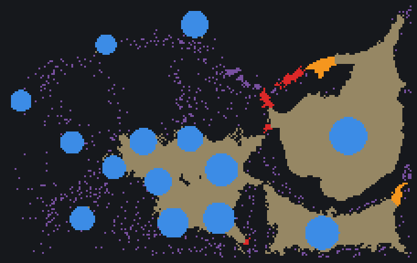<figcaption>The cut map</figcaption></figure>
      <figure>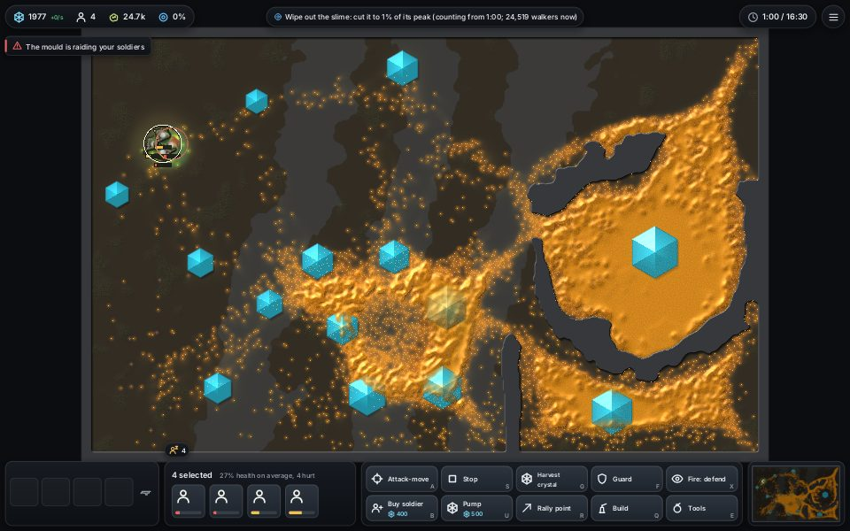<figcaption>The game at the same moment</figcaption></figure>
    </div>
    <dl class=nums>
      <div><dt>Slime</dt><dd>24,653 walkers</dd></div>
      <div><dt>Behind necks 2</dt><dd class=red>0.4%</dd></div>
      <div><dt>Behind necks 4</dt><dd class=orange>1.4%</dd></div>
      <div><dt>Largest part</dt><dd>229 (0.9%)</dd></div>
      <div><dt>Parts of 500+</dt><dd>0</dd></div>
    </dl>
  </article>
  <article class=planet>
    <header><h3>Planet 3: Trunk</h3><span class=tag>120 s, its worst count</span></header>
    <div class=pair>
      <figure>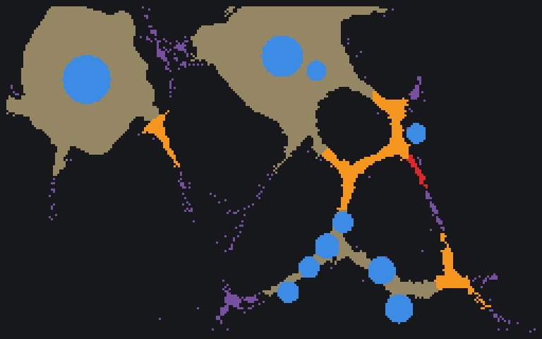<figcaption>The cut map</figcaption></figure>
      <figure>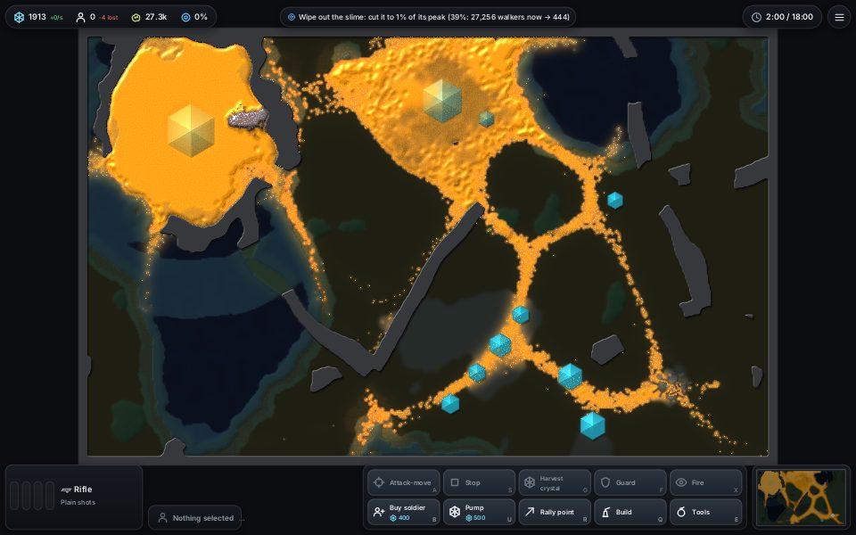<figcaption>The game at the same moment</figcaption></figure>
    </div>
    <dl class=nums>
      <div><dt>Slime</dt><dd>27,257 walkers</dd></div>
      <div><dt>Behind necks 2</dt><dd class=red>0.1%</dd></div>
      <div><dt>Behind necks 4</dt><dd class=orange>4.7%</dd></div>
      <div><dt>Largest part</dt><dd>318 (1.2%)</dd></div>
      <div><dt>Parts of 500+</dt><dd>0</dd></div>
    </dl>
  </article>
  <article class=planet>
    <header><h3>Planet 4: Swarmer</h3><span class=tag>60 s, its worst count</span></header>
    <div class=pair>
      <figure>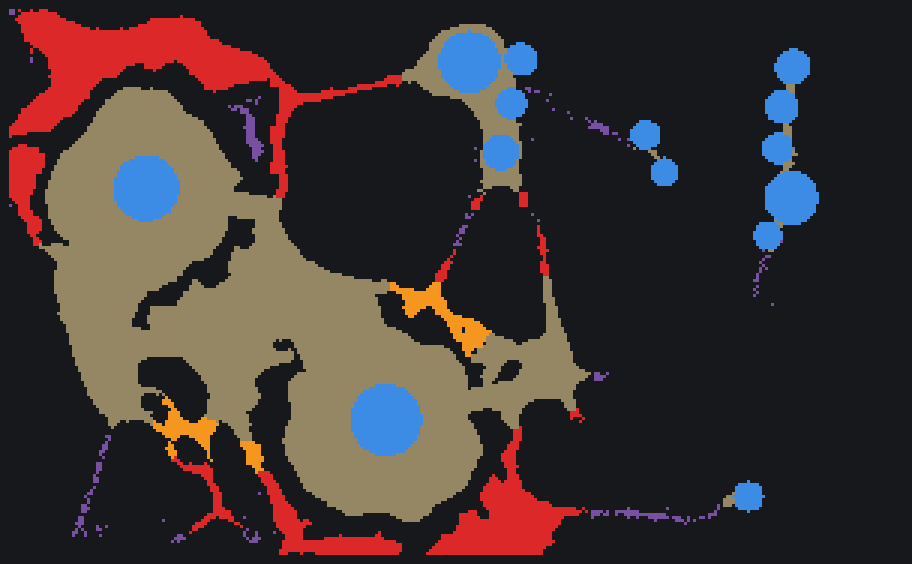<figcaption>The cut map</figcaption></figure>
      <figure>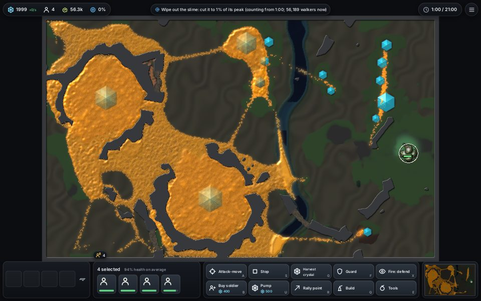<figcaption>The game at the same moment</figcaption></figure>
    </div>
    <dl class=nums>
      <div><dt>Slime</dt><dd>56,274 walkers</dd></div>
      <div><dt>Behind necks 2</dt><dd class=red>17.7%</dd></div>
      <div><dt>Behind necks 4</dt><dd class=orange>19.0%</dd></div>
      <div><dt>Largest part</dt><dd>5,051 (9.0%)</dd></div>
      <div><dt>Parts of 500+</dt><dd>3</dd></div>
    </dl>
  </article>
  <article class=planet>
    <header><h3>Planet 5: Sporer</h3><span class=tag>60 s, its worst count</span></header>
    <div class=pair>
      <figure>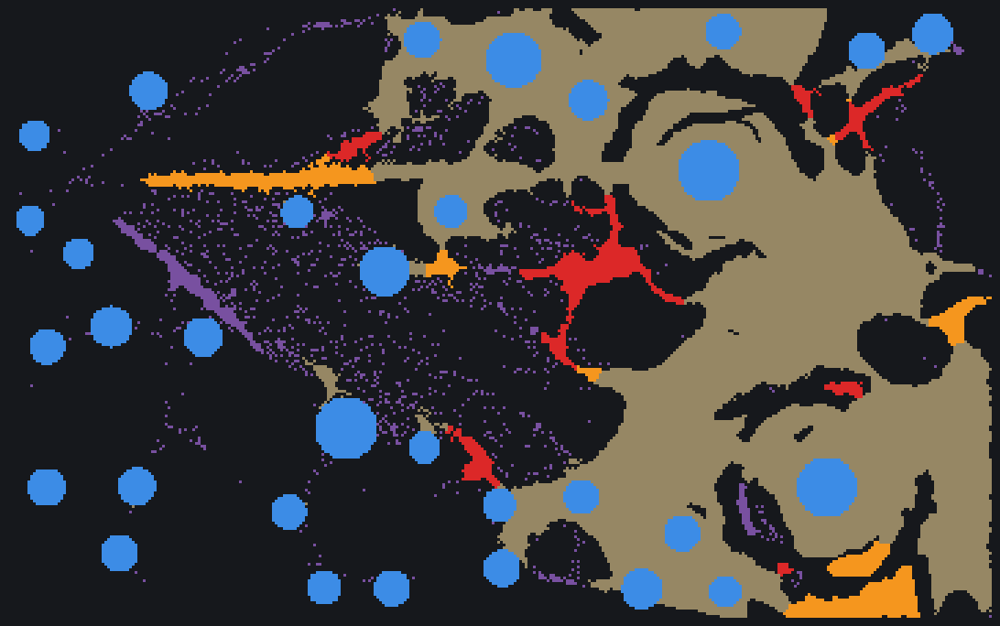<figcaption>The cut map</figcaption></figure>
      <figure>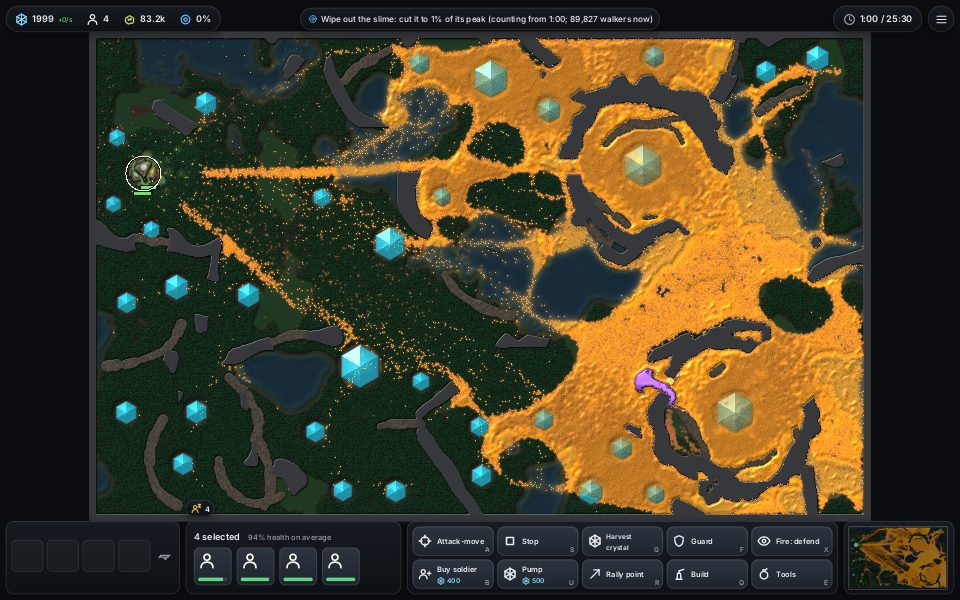<figcaption>The game at the same moment</figcaption></figure>
    </div>
    <dl class=nums>
      <div><dt>Slime</dt><dd>82,804 walkers</dd></div>
      <div><dt>Behind necks 2</dt><dd class=red>2.6%</dd></div>
      <div><dt>Behind necks 4</dt><dd class=orange>5.8%</dd></div>
      <div><dt>Largest part</dt><dd>1,367 (1.7%)</dd></div>
      <div><dt>Parts of 500+</dt><dd>3</dd></div>
    </dl>
  </article>
  <article class=planet>
    <header><h3>Planet 6: Sleeper</h3><span class=tag>180 s, its worst count</span></header>
    <div class=pair>
      <figure>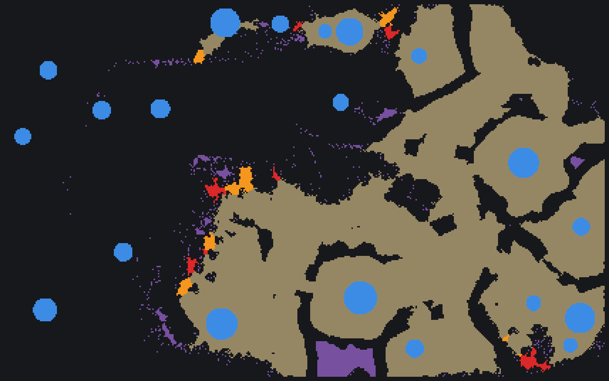<figcaption>The cut map</figcaption></figure>
      <figure>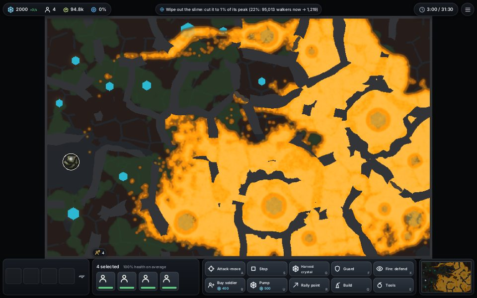<figcaption>The game at the same moment</figcaption></figure>
    </div>
    <dl class=nums>
      <div><dt>Slime</dt><dd>94,836 walkers</dd></div>
      <div><dt>Behind necks 2</dt><dd class=red>0.5%</dd></div>
      <div><dt>Behind necks 4</dt><dd class=orange>1.1%</dd></div>
      <div><dt>Largest part</dt><dd>162 (0.2%)</dd></div>
      <div><dt>Parts of 500+</dt><dd>0</dd></div>
    </dl>
  </article>
  <article class=planet>
    <header><h3>Planet 7: Grudge</h3><span class=tag>120 s, its worst count</span></header>
    <div class=pair>
      <figure>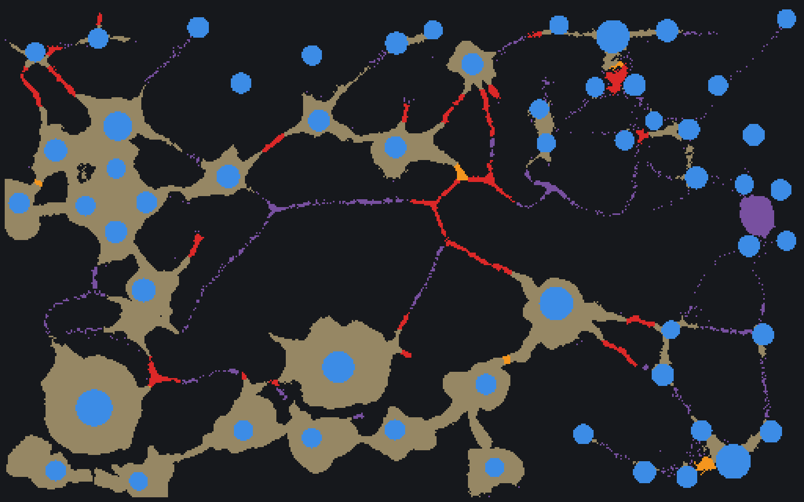<figcaption>The cut map</figcaption></figure>
      <figure>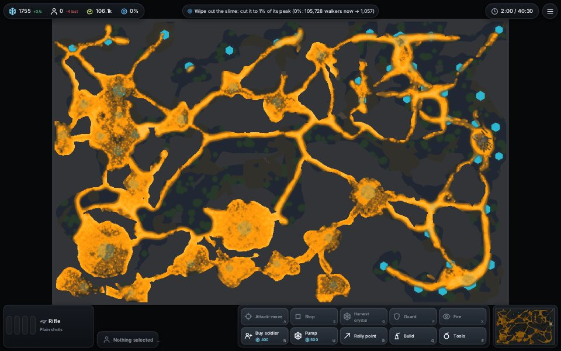<figcaption>The game at the same moment</figcaption></figure>
    </div>
    <dl class=nums>
      <div><dt>Slime</dt><dd>106,127 walkers</dd></div>
      <div><dt>Behind necks 2</dt><dd class=red>2.0%</dd></div>
      <div><dt>Behind necks 4</dt><dd class=orange>1.1%</dd></div>
      <div><dt>Largest part</dt><dd>347 (0.3%)</dd></div>
      <div><dt>Parts of 500+</dt><dd>0</dd></div>
    </dl>
  </article>
  <article class=planet>
    <header><h3>Planet 8: late mix</h3><span class=tag>120 s, its worst count</span></header>
    <div class=pair>
      <figure>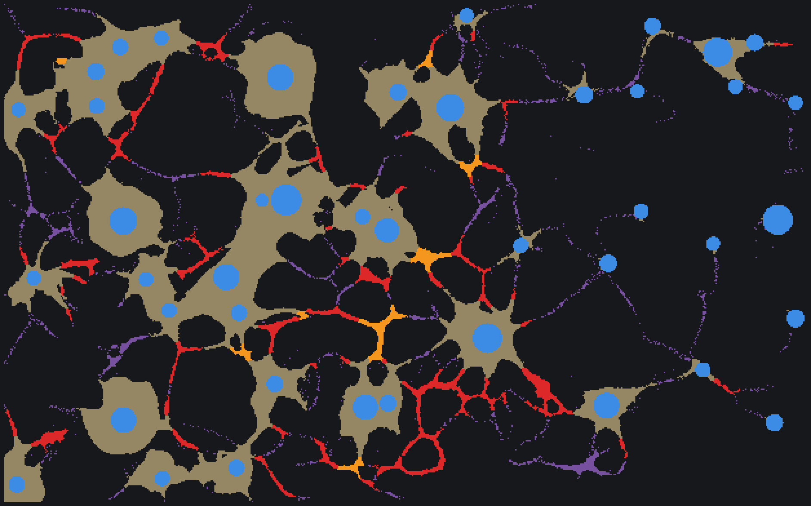<figcaption>The cut map</figcaption></figure>
      <figure>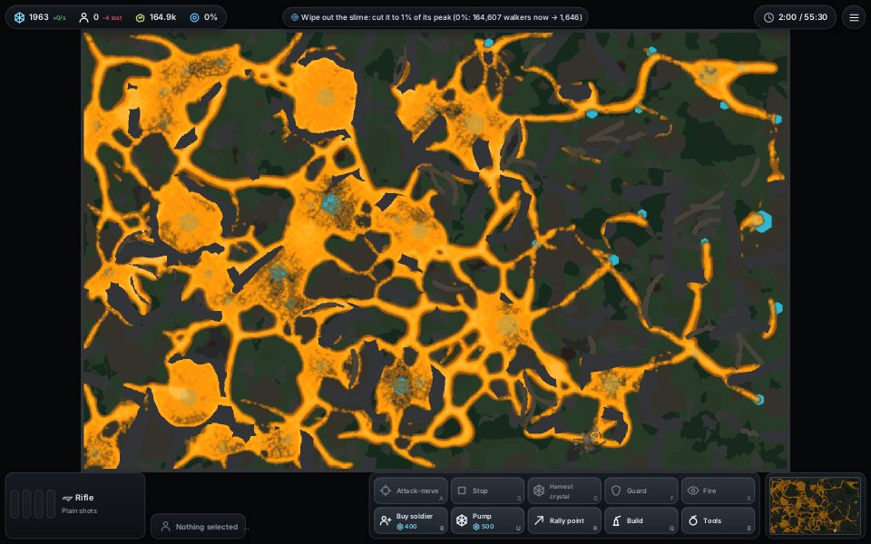<figcaption>The game at the same moment</figcaption></figure>
    </div>
    <dl class=nums>
      <div><dt>Slime</dt><dd>164,845 walkers</dd></div>
      <div><dt>Behind necks 2</dt><dd class=red>5.2%</dd></div>
      <div><dt>Behind necks 4</dt><dd class=orange>4.8%</dd></div>
      <div><dt>Largest part</dt><dd>829 (0.5%)</dd></div>
      <div><dt>Parts of 500+</dt><dd>6</dd></div>
    </dl>
  </article>
</section>

<section>
  <h2>Every count</h2>
  <p>Shares are of all the slime's walkers at that moment. The last column is the first census's rule (pinholes left open), for comparison.</p>
  <div class=scroll><table>
    <thead><tr><th>Planet</th><th>Time</th><th>Walkers</th><th>Necks 2</th><th>Necks 4</th><th>Largest part</th><th>500+</th><th>Open, necks 4</th></tr></thead>
    <tbody><tr><td>1 Drifter</td><td>60 s</td><td>15,207</td><td>0.2%</td><td>0.0%</td><td>0 <span class=dim>(0.0%)</span></td><td>0</td><td class=dim>0.0%</td></tr><tr><td>1 Drifter</td><td>120 s</td><td>17,720</td><td>0.3%</td><td>0.6%</td><td>110 <span class=dim>(0.6%)</span></td><td>0</td><td class=dim>0.0%</td></tr><tr><td>2 Sprawler</td><td>60 s</td><td>24,653</td><td>0.4%</td><td>1.4%</td><td>229 <span class=dim>(0.9%)</span></td><td>0</td><td class=dim>1.9%</td></tr><tr><td>2 Sprawler</td><td>120 s</td><td>32,960</td><td>1.0%</td><td>1.4%</td><td>198 <span class=dim>(0.6%)</span></td><td>0</td><td class=dim>0.0%</td></tr><tr><td>3 Trunk</td><td>60 s</td><td>44,083</td><td>2.4%</td><td>2.2%</td><td>568 <span class=dim>(1.3%)</span></td><td>1</td><td class=dim>2.1%</td></tr><tr><td>3 Trunk</td><td>120 s</td><td>27,257</td><td>0.1%</td><td>4.7%</td><td>318 <span class=dim>(1.2%)</span></td><td>0</td><td class=dim>1.5%</td></tr><tr><td>3 Trunk</td><td>180 s</td><td>30,166</td><td>1.2%</td><td>2.3%</td><td>309 <span class=dim>(1.0%)</span></td><td>0</td><td class=dim>3.5%</td></tr><tr><td>4 Swarmer</td><td>60 s</td><td>56,274</td><td>17.7%</td><td>19.0%</td><td>5,051 <span class=dim>(9.0%)</span></td><td>3</td><td class=dim>18.7%</td></tr><tr><td>4 Swarmer</td><td>120 s</td><td>36,457</td><td>2.4%</td><td>1.5%</td><td>558 <span class=dim>(1.5%)</span></td><td>1</td><td class=dim>0.0%</td></tr><tr><td>4 Swarmer</td><td>180 s</td><td>44,730</td><td>2.0%</td><td>0.9%</td><td>213 <span class=dim>(0.5%)</span></td><td>0</td><td class=dim>0.6%</td></tr><tr><td>5 Sporer</td><td>60 s</td><td>82,804</td><td>2.6%</td><td>5.8%</td><td>1,367 <span class=dim>(1.7%)</span></td><td>3</td><td class=dim>13.0%</td></tr><tr><td>5 Sporer</td><td>120 s</td><td>67,398</td><td>0.9%</td><td>0.6%</td><td>259 <span class=dim>(0.4%)</span></td><td>0</td><td class=dim>1.5%</td></tr><tr><td>5 Sporer</td><td>180 s</td><td>87,834</td><td>1.9%</td><td>1.1%</td><td>465 <span class=dim>(0.5%)</span></td><td>0</td><td class=dim>0.8%</td></tr><tr><td>6 Sleeper</td><td>60 s</td><td>121,980</td><td>0.2%</td><td>0.9%</td><td>260 <span class=dim>(0.2%)</span></td><td>0</td><td class=dim>5.6%</td></tr><tr><td>6 Sleeper</td><td>120 s</td><td>107,260</td><td>0.5%</td><td>0.9%</td><td>200 <span class=dim>(0.2%)</span></td><td>0</td><td class=dim>29.6%</td></tr><tr><td>6 Sleeper</td><td>180 s</td><td>94,836</td><td>0.5%</td><td>1.1%</td><td>162 <span class=dim>(0.2%)</span></td><td>0</td><td class=dim>55.7%</td></tr><tr><td>7 Grudge</td><td>60 s</td><td>86,134</td><td>0.6%</td><td>0.6%</td><td>345 <span class=dim>(0.4%)</span></td><td>0</td><td class=dim>0.7%</td></tr><tr><td>7 Grudge</td><td>120 s</td><td>106,127</td><td>2.0%</td><td>1.1%</td><td>347 <span class=dim>(0.3%)</span></td><td>0</td><td class=dim>1.1%</td></tr><tr><td>7 Grudge</td><td>180 s</td><td>136,743</td><td>1.6%</td><td>0.8%</td><td>238 <span class=dim>(0.2%)</span></td><td>0</td><td class=dim>0.6%</td></tr><tr><td>8 late mix</td><td>60 s</td><td>145,612</td><td>2.9%</td><td>1.1%</td><td>429 <span class=dim>(0.3%)</span></td><td>0</td><td class=dim>0.8%</td></tr><tr><td>8 late mix</td><td>120 s</td><td>164,845</td><td>5.2%</td><td>4.8%</td><td>829 <span class=dim>(0.5%)</span></td><td>6</td><td class=dim>3.9%</td></tr><tr><td>8 late mix</td><td>180 s</td><td>188,109</td><td>3.0%</td><td>3.2%</td><td>1,012 <span class=dim>(0.5%)</span></td><td>5</td><td class=dim>1.9%</td></tr></tbody>
  </table></div>
</section>

<section>
  <h2>What follows</h2>
  <ul>
    <li>No Cut card, by the game designer's rule: "a cut bullet only earns a slot if the shapes are there".</li>
    <li>A thin cut refills in about 2 s unless held (one-body report, 11-12), so where the shapes are, a wall or a squad in the gap is the cut.</li>
    <li>If a new slime spreads in long veins, re-run the count before reopening the card. It would say yes if the largest part were 5% or more of the slime in most counts.</li>
    <li>The Heave and Corral merge goes in the next playtest pack as your pick.</li>
  </ul>
  <p class=dim>Source: <code>Reports/gun-cut-count-2026-11-17/</code> (the count is <code>mould::necks</code>, the key <code>larder-world necks=T,...</code>).</p>
</section>
</main>
